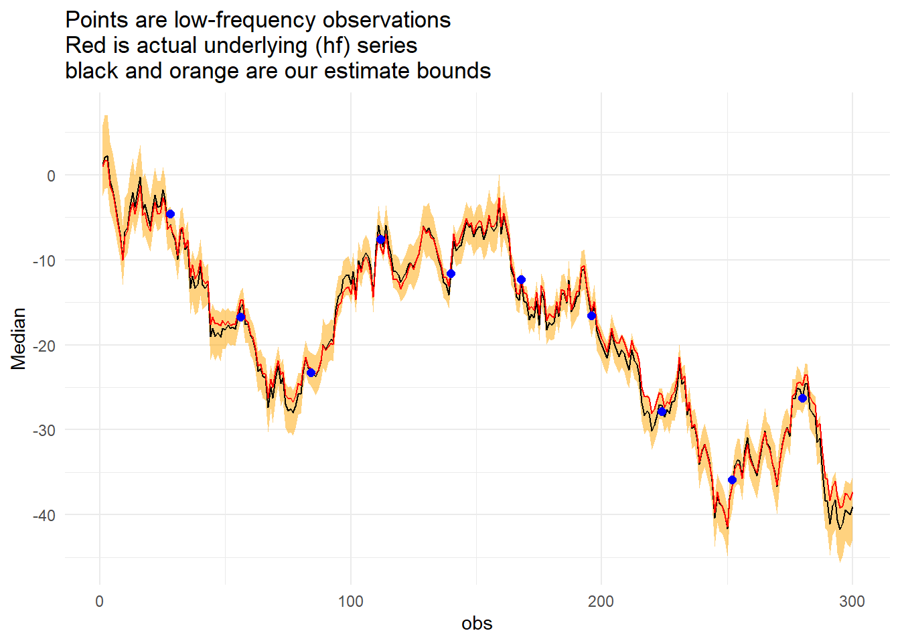

The purpose of this post is to implement “Nowcasting” in Stan using a state-space model. This post is originally inspired from Jim Savage’s gist located here.
\[y_t \sim N(x_t + \epsilon_t, \sigma_{\epsilon})\]
\[x_t \sim N(x_{t-1}+Z_t\gamma_t + \eta_t, \sigma_{\eta})\]
In the case of this model we only observe the values of \(y\) at time \(t\).
First we’ll bring in our packages.
library(rstan)
suppressPackageStartupMessages(library(tidyverse))
options(mc.cores = parallel::detectCores())
rstan_options(auto_write = TRUE)
set.seed(336)Then we will generate the required data. In this case we will generate the entire DPG, then for our simulation will remove those data points that do not coincide with our measurement frequency.
# Set up DGP
n <- 300 # number of data points
freq <- 28
# High frequency helpers
z1 <- rnorm(n, 0, 3);
z2 <- rnorm(n, 0, 3)
# Set up "real" state
x <- rep(NA, n)
x[1] <- 1
for(i in 2:n){
x[i] <- x[i-1] + 0.4*z1[i] + -0.3*z2[i] + rnorm(1, 0, 0.2)
}
# Set up y that is only recorded once for every "freq" values of x (set freq above)
y <- x + rnorm(n, 0, 1)
y[!(1:n%%freq==0)] <- NA
# Have a look at the data to make sure you know what's happening
dat <-data.frame(y, z1, z2) Format the data for stan.
# y is now just the observed values of y
y <- dat$y[!is.na(dat$y)]
model_list <- list(N1 = length(y),
N2 = n,
freq = freq,
y = y,
z1 = z1,
z2 = z2)writeLines(readLines("stan_nowcast.stan"))// From https://github.com/khakieconomics/nowcasting_in_stan/blob/master/nowcasting.stan
// Via James Savage
data {
int N1; // length of low frequency series
int N2; // length of high frequency series
int freq; // every freq-th observation of the high frequency series we get an observation of the low frequency one
vector[N1] y;
vector[N2] z1;
vector[N2] z2;
}
parameters {
real<lower = 0> sigma_epsilon;
real<lower = 0> sigma_eta;
vector[2] gamma;
vector[N2] x;
}
model {
int count;
// priors
sigma_epsilon ~ cauchy(0,1);
sigma_eta ~ cauchy(0,1);
gamma ~ normal(0,1);
//increment_log_prob(normal_lpdf(x[1], 0, 1));
// likelihood
count = 0;
for(i in 2:N2){
target += normal_lpdf(x[i]| x[i-1] + z1[i]*gamma[1] + z2[i]*gamma[2], sigma_eta);
if(i%freq==0){
count = count + 1;
target += normal_lpdf(y[count]| x[i], sigma_epsilon);
}
}
}Now we have to compile our model.
model <- stan_model("stan_nowcast.stan")fit <- sampling(model, model_list, iter = 2000,
chains = 2, refresh = 0,
control = list(adapt_delta = .95,
max_treedepth = 15))## Warning: There were 2 chains where the estimated Bayesian Fraction of Missing Information was low. See
## http://mc-stan.org/misc/warnings.html#bfmi-low## Warning: Examine the pairs() plot to diagnose sampling problemsAnd as always special thanks to Michael Betancourt for these amazing tools for diagnostics.
util <- new.env()
source('stan_utilities.R', local=util)util$check_all_diagnostics(fit)## [1] "n_eff / iter looks reasonable for all parameters"
## [1] "Rhat for parameter sigma_eta is 1.1372136448821!"
## [1] " Rhat above 1.1 indicates that the chains very likely have not mixed"
## [1] "0 of 2000 iterations ended with a divergence (0%)"
## [1] "813 of 2000 iterations saturated the maximum tree depth of 10 (40.65%)"
## [1] " Run again with max_treedepth set to a larger value to avoid saturation"
## [1] "Chain 1: E-FMI = 0.0218018506545009"
## [1] "Chain 2: E-FMI = 0.00913922915443346"
## [1] " E-FMI below 0.2 indicates you may need to reparameterize your model"So it appears that this model needs a little more work!
So while our model parameterisation isn’t perfect the coefficients in the data generating process have been sussed out of the data by our model. So this isn’t a complete loss!
print(fit, pars = c("gamma"))## Inference for Stan model: stan_nowcast.
## 2 chains, each with iter=2000; warmup=1000; thin=1;
## post-warmup draws per chain=1000, total post-warmup draws=2000.
##
## mean se_mean sd 2.5% 25% 50% 75% 98% n_eff Rhat
## gamma[1] 0.46 0 0.06 0.33 0.42 0.46 0.50 0.57 721 1
## gamma[2] -0.31 0 0.05 -0.41 -0.34 -0.31 -0.28 -0.22 1221 1
##
## Samples were drawn using NUTS(diag_e) at Thu Jun 20 10:52:22 2019.
## For each parameter, n_eff is a crude measure of effective sample size,
## and Rhat is the potential scale reduction factor on split chains (at
## convergence, Rhat=1).stan_plot(fit, pars = "gamma")## ci_level: 0.8 (80% intervals)## outer_level: 0.95 (95% intervals)# Extract the estimates of the state
x_mod <- extract(fit, pars = "x", permuted = F)
x_mod <- plyr::adply(x_mod, 2)
# Summarise the parameters
yy <- dat$y
x_summarise <- x_mod %>%
dplyr::select(-chains) %>%
gather(variable, value) %>%
mutate(obs = str_extract(variable, "[0-9]{1,4}") %>% as.numeric) %>%
group_by(obs) %>%
summarise(Median = median(value),
Lower = quantile(value, 0.025),
Upper = quantile(value, 0.975)) %>%
mutate(Actual = x,
Signal = yy)Now to the graph, but first we can check how often a result occured outside of our confidence interval (technically highest density interval).
mean(x_summarise$Actual<x_summarise$Lower | x_summarise$Actual>x_summarise$Upper) %>%
scales::percent()## [1] "0.333%"x_summarise %>%
ggplot(aes(x = obs)) +
geom_ribbon(aes(ymin = Lower, ymax = Upper), fill = "orange", alpha = 0.5) +
geom_line(aes(y = Median)) +
geom_line(aes(y = Actual), colour = "red") +
geom_point(aes(y = Signal), size = 2, color = "blue") +
labs(title = "Points are low-frequency observations\nRed is actual underlying (hf) series\nblack and orange are our estimate bounds")+
theme_minimal()
Research and Methods Resources
me.dewitt.jr@gmail.com
Winston- Salem, NC
Copyright © 2018 Michael DeWitt. All rights reserved.